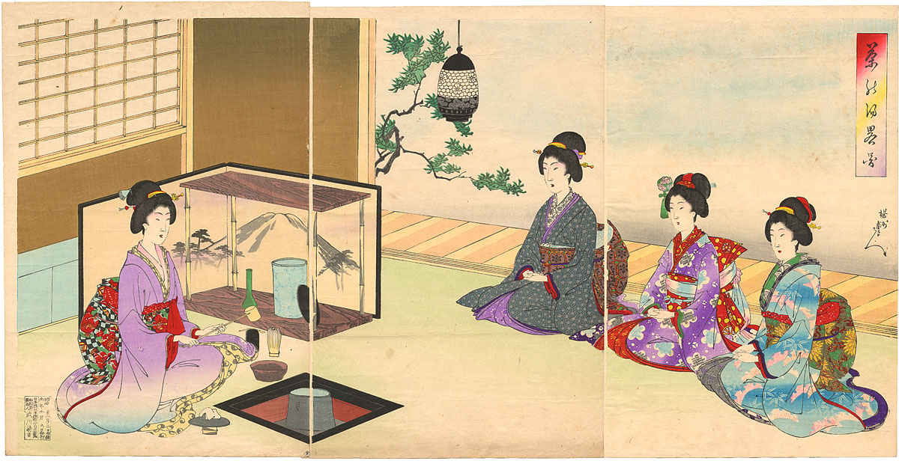
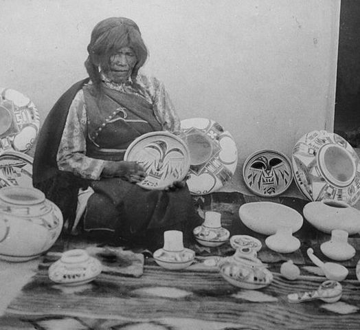
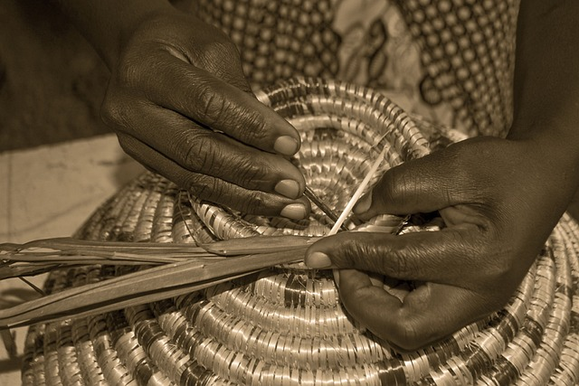
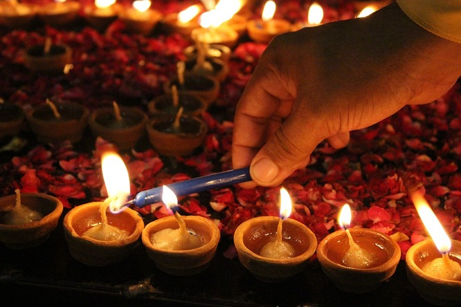
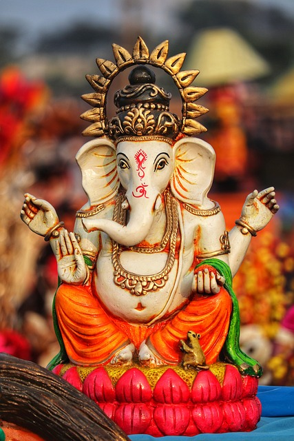
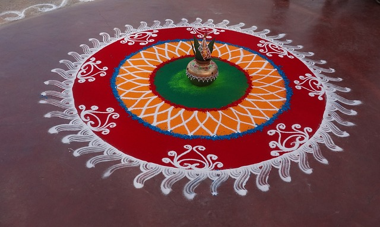
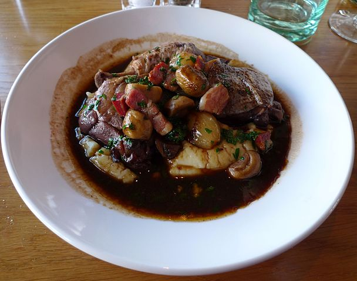

Explore the traditions of different cultures each month through in-depth articles and different multimedia.
Japanese Tea Ceremony

The art and spirit of the Japanese tea ceremony, which emphasizes harmony, respect, purity, and tranquility. Known in Japan as 'Chadō', this traditional ceremony involves the ceremonial preparation of matcha, a powdered green tea.
Master Sen no Rikyū, who formalized the tea ceremony (artwork by Hasegawa Tōhaku)
Artist Profiles
Explore the work of artists both classic and contemporary from different cultures.
Nampeyo - Hopi/Tewa Pottery

Nampeyo (1859 – 1942) was a Hopi-Tewa potter who lived on the Hopi Reservation in Arizona. She revived ancient techniques for making and firing pottery and integrated designs from 'Old Hopi' pottery and shards found at 15th-century Sikyátki ruins on First Mesa.
I am constantly searching for talented artists to feature on this platform. If you or someone you know has a unique artistic flair past or present and would like to be highlighted in upcoming features, please don't hesitate to submit your details. I welcome artists from all backgrounds and mediums to share their stories, inspirations, and artistic journeys with me. Showcasing your work will give you exposure and connect you with a community that celebrates cultural diversity and creativity.
Traditional Crafts and Techniques
Learn about traditional crafts like pottery and weaving through detailed guides and video tutorials.
Traditional African Basket Weaving

African basket weaving is more than just a craft—it's a vital part of daily life and culture across the continent. Each region has its own unique methods and materials, reflecting the diverse cultures and environments found there.
Common materials used include colorful grasses, reeds, and palm leaves, woven into elaborate designs. These designs are not only decorative but also hold significant meanings, often related to important stories and cultural events. Notably, countries like Rwanda, Ghana, and South Africa are celebrated for their distinctive weaving styles, which also contribute to local economies.
Learn how to start this craft with basic techniques common in Zulu basketry from South Africa, which is famous for its tightly woven grass baskets used in daily life and during special occasions.
Materials Needed:
Raffia: Flexible, durable, and often dyed in vibrant colors.
Sisal: Known for its strength and used for more structured baskets.
Palm Leaves: Plentiful and pliable, used in many traditional weaving practices.
Sweetgrass: Appreciated for its sweet fragrance and fine texture.
Tools Required:
Scissors or Shears
Large, blunt-ended needles
Awls for tight weaves
Protective gloves
Where to Source Materials:
Materials can be found at local craft stores, online specialty suppliers, or directly from artisans and co-ops in Africa.
Keep up with cultural festivals around the globe and discover new traditions.
Diwali: The Festival of Lights
Diwali, known as the Festival of Lights, is a major Hindu festival celebrated worldwide in October or November. This festival marks the victory of light over darkness and knowledge over ignorance, celebrated with millions of lights shining on rooftops, outside doors and windows, around temples and other buildings.
What to Expect
Attendees will experience the lighting of lamps and candles, elaborate firework displays, and a variety of sweet dishes. The festival also includes prayers, particularly to Lakshmi—the goddess of wealth and prosperity.
How to Participate
Next Diwali is scheduled for November 14th, 2024. While traditionally celebrated in India, major events also take place in cities worldwide. For those traveling to India, major celebrations occur in Delhi, Mumbai, and Jaipur. Ensure to book accommodations early as places fill up quickly.
For those celebrating locally, check out community centers and temples which often organize events.
Diwali Photo Gallary

Diwali lamps

Hindu God Ganesha
Lakshmi Goddess of wealth

Rangoli Art design made with colorful sand
Global Cuisine Recipes
Explore the flavors of the world with recipes from different cultures and learn about the history behind the dishes.
Coq au Vin - France

Photo by Ewan Munro from London, UK
Licenced under: https://creativecommons.org/licenses/by-sa/2.0/
Coq au Vin is a classic French dish whose name literally translates to 'rooster in wine'. It’s made by slow-cooking chicken on the bone with wine, mushrooms, salty pork or bacon, mushrooms, onions, and sometimes garlic.
Recipe
6 chicken thighs, bone in
1 1/2 cups red wine (preferably Burgundy)
1 cup chicken broth
8 ounces bacon, cut into small strips
10 large mushrooms, sliced
1 onion, chopped
2 cloves garlic, minced
2 tbsp olive oil
2 tbsp flour
Herbs: bay leaf, thyme, salt, and pepper
Combine all ingredients in a large pot, bring to a boil, and simmer for about 2 hours until the chicken is tender and the sauce has thickened.
History of Coq au Vin
The history of Coq au Vin is not completely clear, but it is believed to have been around since ancient Gaul and Roman times. The method of marinating meat in wine was likely developed to tenderize tough meats. This dish became popularized in France as a way to cook rooster, an otherwise tough and less desirable meat. Over the centuries, it has evolved into a beloved staple of French cuisine, showcasing the country's rich culinary tradition and love of wine.
Herbes de Provence: is a fragrant mixture of dried herbs typical to the Provence region of southeast France. This blend often includes herbs such as thyme, basil, rosemary, tarragon, savory, marjoram, oregano, and bay leaf. Lavender leaves are sometimes included in products sold in the North American market, giving it a unique floral note that is not traditionally found in French recipes.
This herb blend is used to flavor grilled foods such as fish and meat, as well as vegetable stews. It is often added before or during cooking, allowing the flavors to meld with the cooked food. The versatile nature of Herbes de Provence makes it a pantry staple in kitchens around the world, enhancing everything from simple grilled meats to elaborate stews and sauces.
Culinary Uses: Ideal for marinating meats, seasoning stews, or infusing oils, Herbes de Provence adds a robust Mediterranean flair to any dish.
Health Benefits: The herbs in this blend not only add flavor without additional salt or fat but also offer various health benefits, including anti-inflammatory properties and enhanced digestion.
Explore more about how to integrate Herbes de Provence into your cooking.
This month, the spotlight is on Hebrew, an ancient language that has been revived in the modern era as the official language of Israel. From its biblical roots to its use in daily Israeli life, Hebrew is a language with rich history and significance.
About Hebrew
Hebrew was historically a spoken language in ancient times before falling out of common use as a daily spoken language. Revived in the late 19th and early 20th centuries by Eliezer Ben-Yehuda among others, it has transformed into the everyday language of millions of people in Israel and Jewish communities worldwide.
Basic Phrases in Hebrew
Hello: שלום (Shalom)
Thank you: תודה (Todah)
Goodbye: להתראות (Lehitra'ot)
Please: בבקשה (Bevakasha)
Cultural Significance
Hebrew is not just a means of communication, but a vital link to Jewish history and religion. It is the language of the Torah, and it plays a crucial role in Jewish religious practices and cultural life.
Language Learning Resources
Explore new languages through easy-to-follow lessons, engaging quizzes, and fun games that make learning interactive and enjoyable.
Recommended Language Learning Platforms
Duolingo
Learn languages through fun, quick lessons that feel like games! Duolingo offers numerous languages from Spanish to Japanese.